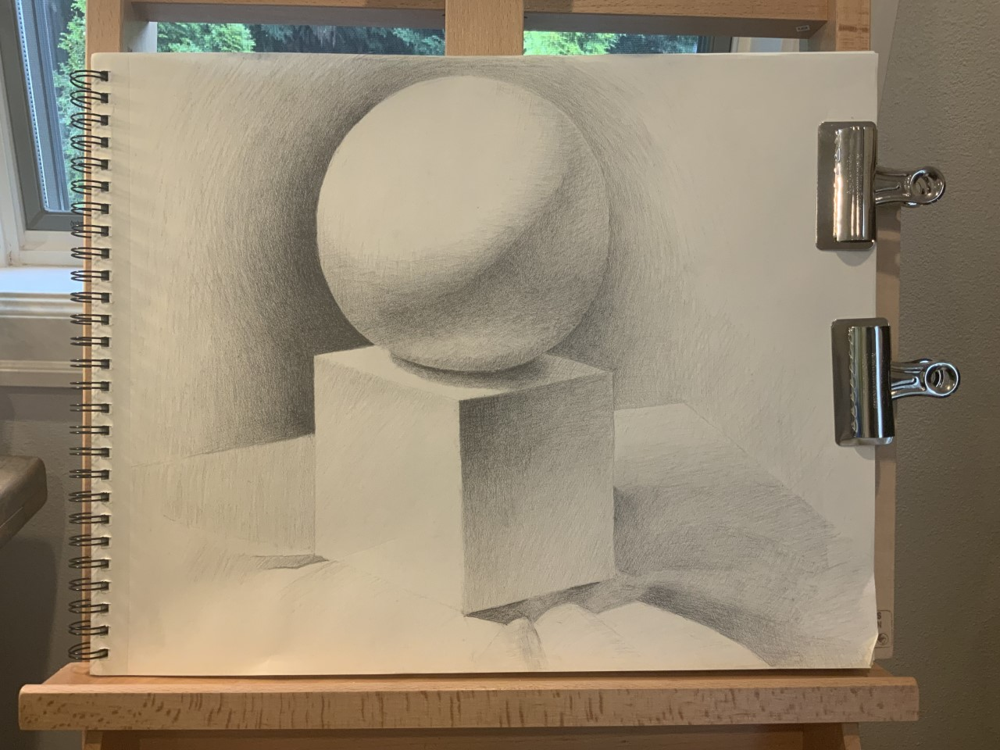

Here are some activities in which I got into the "flow":
I actually haven't started drawing for very long but I really like doing it.
I am usually very slow with it because I focus a lot on details.
When I get into the flow I tend to draw a lot clearer and more effient than usual.
This when I become confident with my skills and know exactly where to put my strokes.
Here is a photo:

When I write essays, I tend to get into the flow pretty quickly.
Many times I would lose track of time and write for hours on end.
This is also the same with when I do Chinese Calligraphy or writing notes.
While writing codes, I half get into the flow.
This might be because I haven't coded for very long (I've only coded some easy games).
Listening to music is fasted way for me to get into the flow of things.
I like to listen to music when I draw, write, and do homework.
I basically listen to music for.
Some music helps me loose track of time, making it easier for me to pay my complete attention to one things.
Here are some peaceful music I like listening to (I also listen to non-peaceful music, but I get distracted)
Pretty Piano Pieces!
| Which One Do I Like Best? | Which One Do I Go Into The Flow Faster? |
|---|---|
| drawing/music | I flow into music faster |
Well, this is the end to my flows! I hope you enjoyed :D.